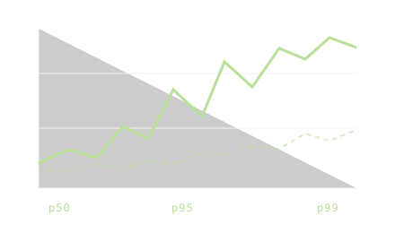

Performance console
Watch the long tail.
Compare PostgreSQL benchmark runs with percentile summaries and a baseline that you choose.

Measurement input
Run comparison
Ready when you are
Load an example or paste your own input.
How to use PG Latency Lab
- Paste timing CSVs or pgbench transaction logs.
- Load the measurements and choose a baseline.
- Review the percentiles and download a summary.